Usability Testing & Content Design for an EdTech Startup
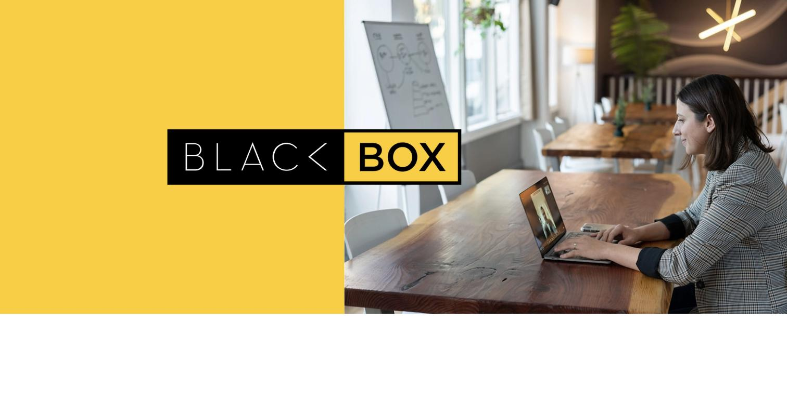
Background
Blackbox is an EdTech startup connecting teachers and learners through an online platform. As the product neared launch, the CEO invited me to review and strengthen the site's UX and content — even though no user testing had been done yet. The team had built several flows based on their own assumptions about how teachers would use the product.
My role
As UX Content Consultant, I worked directly with the CEO, CTO, and developer to define the brand's voice principles, run usability testing, and rewrite content across the teacher onboarding flow — the first and most important touchpoint for trust.
Aligning with the team
I first reviewed the site and shared my observations. The CEO felt the issues were minor and could wait until after launch; I saw them as potential deal-breakers. Given limited resources, we agreed to prioritise one critical flow: teacher onboarding.
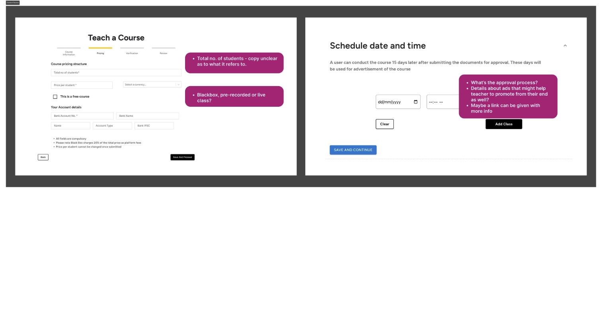
Running usability testing
With the launch approaching, I proposed a quick usability study to bring in the user's perspective. I tested the onboarding flow with five teachers who matched the target profile, both in person and over Zoom.
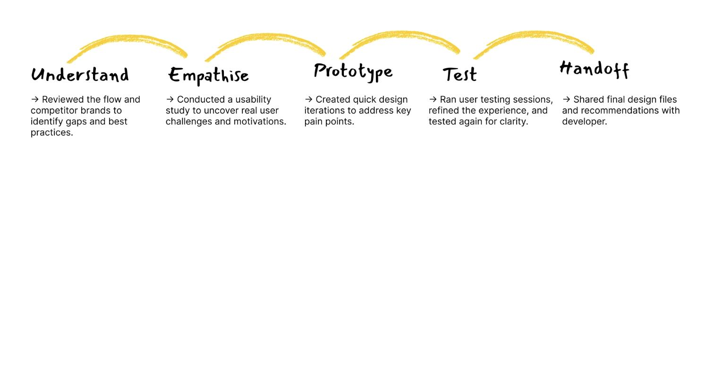
What we found
The sign-up process was long and cumbersome, and it frustrated users. There was little guidance or feedback as people progressed through the steps, and the platform didn't yet feel trustworthy enough to inspire confidence.
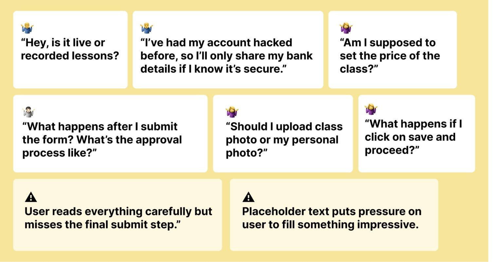
The idea we couldn't implement: a shorter onboarding
During testing I noticed the full sign-up took around 20 minutes — far longer than competitors like Udemy or Domestika, who separate teacher registration from class submission. I proposed a lighter flow: approve teachers first, then guide them to create their first class afterward, deferring non-essential details like course materials or bank verification to later steps. This would have required significant backend changes, so given the launch timeline, we held off on the structural overhaul and focused on simplifying the existing experience instead.
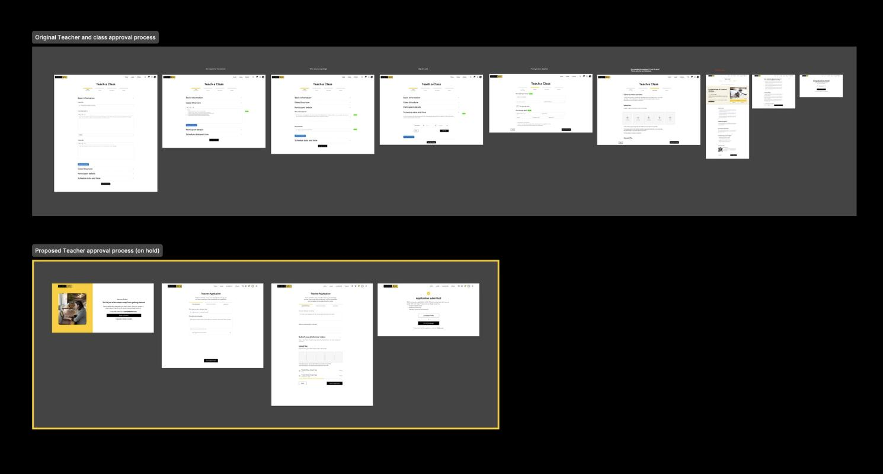
Content improvements
Before writing anything, I spoke with the CEO to define Blackbox's voice principles and tone guidelines, so every piece of content felt consistent with the brand. I then simplified labels and helper text for better comprehension, clarified the intent behind complex fields (like explaining why bank details were needed), and added contextual hints to help teachers make confident decisions at each step. Key moments I rewrote included the onboarding carousel introducing Blackbox's value proposition, a form preview screen setting expectations before sign-up began, reassuring microcopy around the banking details section, clearer guidance on class pricing and student numbers, and a new "save progress" button with copy confirming that teachers' progress wouldn't be lost if they left mid-flow.
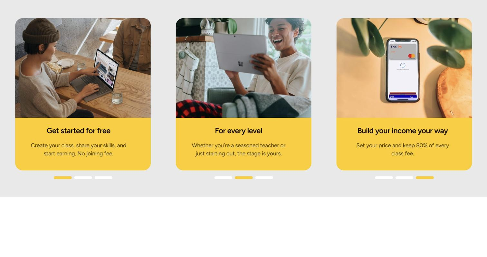
The onboarding carousel introducing Blackbox's value proposition.
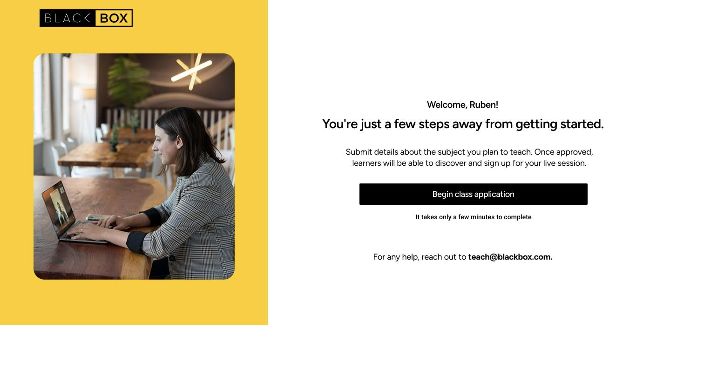
A form preview screen setting expectations before sign-up began.
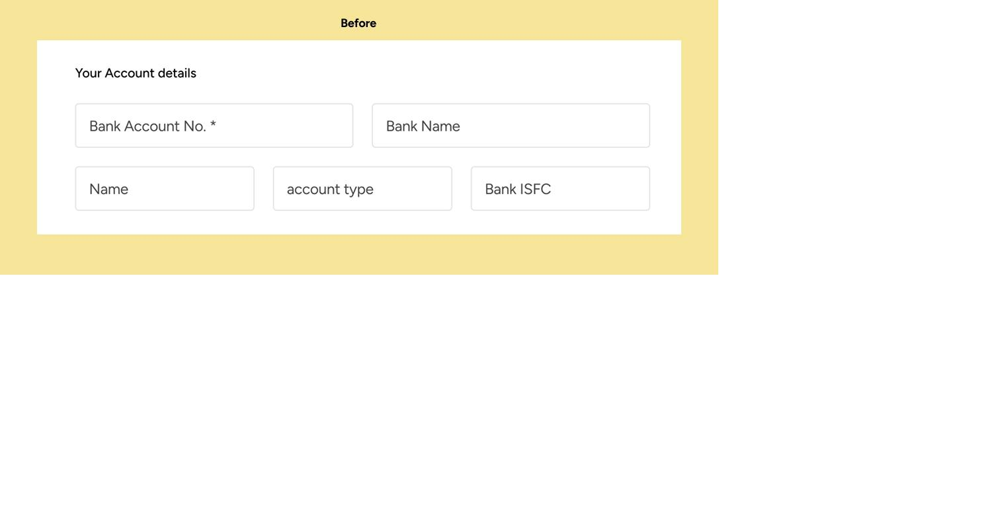
Banking details section — before.
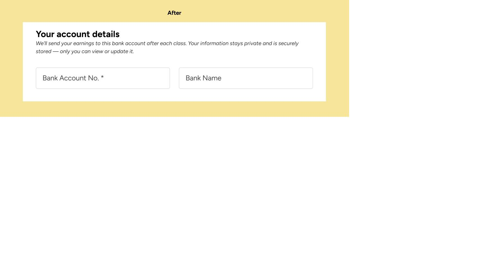
Banking details section — after, with reassuring microcopy explaining why the information was needed.
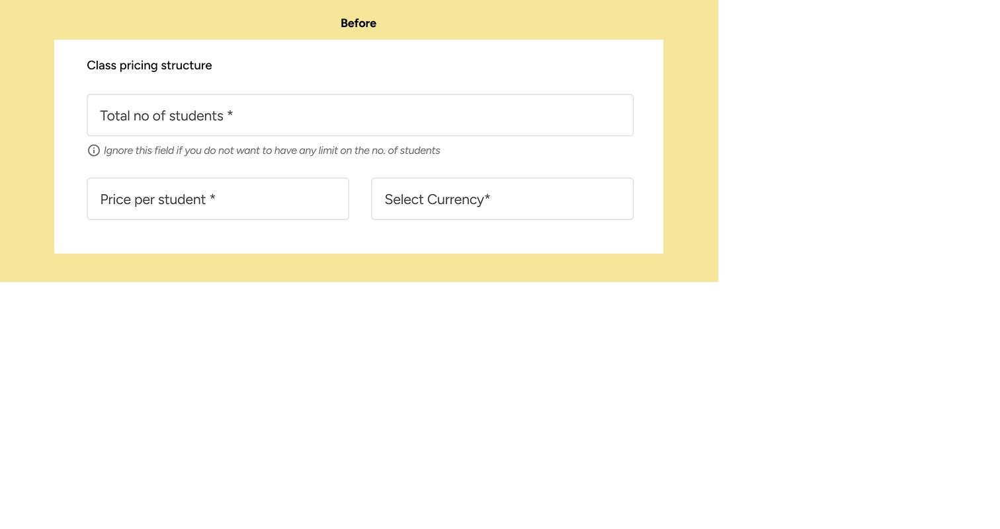
Class pricing and student numbers — before.
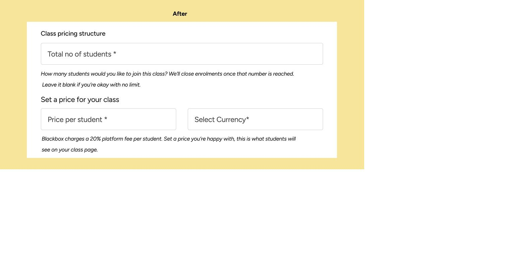
Class pricing and student numbers — after, with clearer guidance.
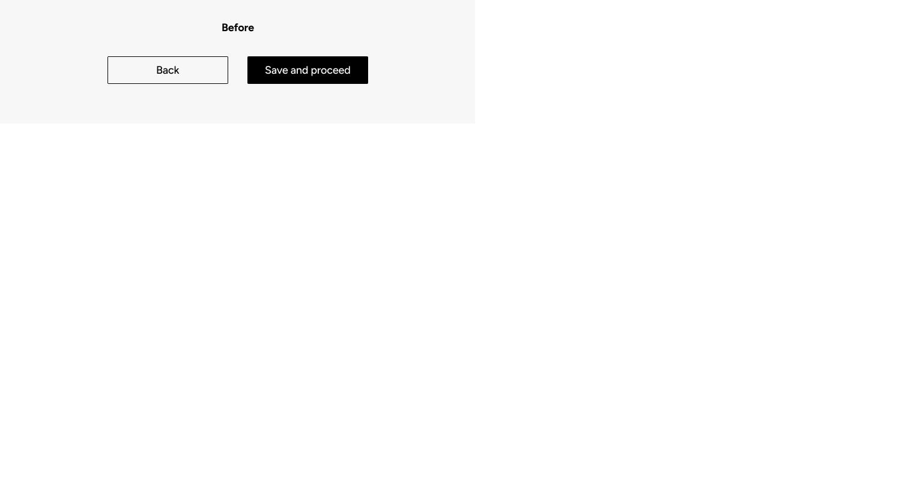
Save progress step — before.
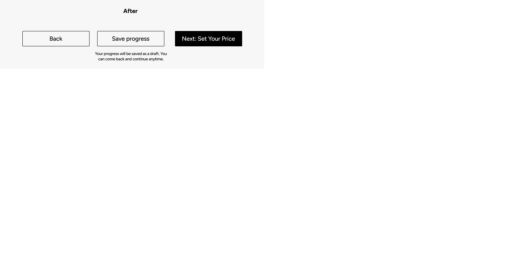
The new "save progress" button, with copy confirming progress wouldn't be lost.
Outcome
In a second round of testing, the revised onboarding performed noticeably better: teachers completed sections with fewer prompts and described the process as simpler and friendlier. I walked the developer through the updated Figma mocks, and together we shipped the new sign-up experience, which the CEO reviewed and approved. Beyond the usability gains, there was a mindset shift within the team — the CEO and developer saw firsthand how clear content and small UX improvements could change user perception and confidence.
Lessons learned
Rapid, iterative testing proved to be a game-changer, especially in a startup environment where time and resources are limited. I learned to handle pushback constructively while still creating space to experiment, and saw first-hand how thoughtful, user-centred content doesn't just improve usability — it builds trust and confidence across the whole team.